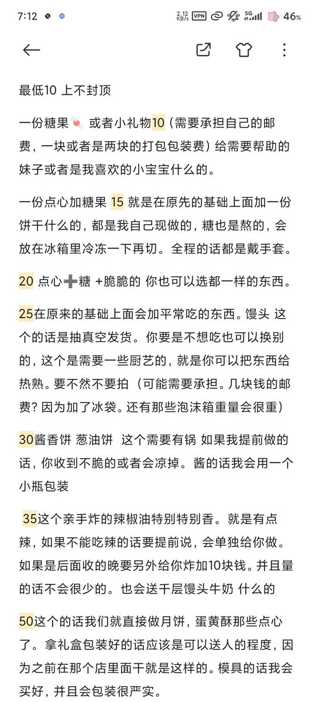
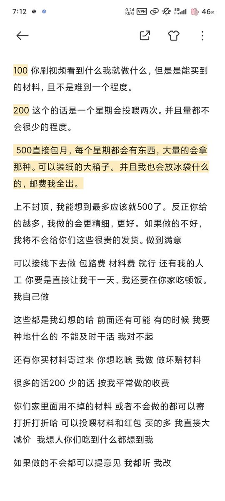
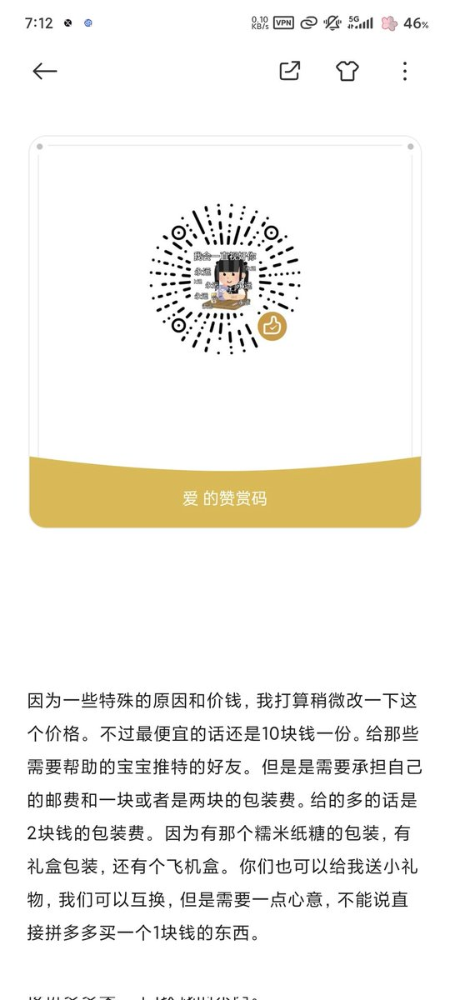

冰棍好烫喵 🍥🧊🍔🍟🍜🍣🍙🍧🍮🍩☕️💊🤤
@bghtnya
@wiopqwtrpp5 wow



豆沙包大王（没回你消息就是 我手上有面 等一会我手上有油 或者我身上有面有油 或者在烤东西 快糊 ）
@wiopqwtrpp5
豆沙包 小厨房 家庭 烘焙 价格表
主播现在做过 桃酥 花生一口酥 葱油饼
酱香饼 手抓饼 千层馍馍 红糖发糕 铜锣烧 牛肉酱 牛轧糖 牛奶糖 糍粑 蛋卷 绿豆饼
因为我家没有烤箱 就是电饼铛 和平底锅
过段时间会解锁 仙豆糕 蛋黄酥 （不咸）
感谢大家打赏 谢谢支持 我爱你们 我一定会做的好一点的 包不亏 https://t.co/qmCjxsnWls